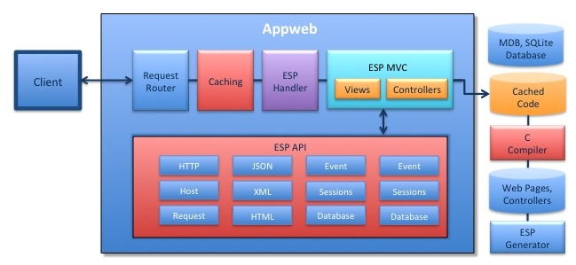

Quick Nav
See Also
Embedded Server Pages
The Embedded Server Pages (ESP) web framework makes it dramatically easier to create blazing fast dynamic web applications. The ESP web framework provides an application generator, templating engine, a powerful Model-View-Controller framework, a library of HTML controls and an extensive API to take the tedium out of creating web applications. Via this framework, ESP drastically reduces the number of lines of code you need to write for a compelling, dynamic web application.
This document describes the ESP web framework and how ESP is embedded in Appweb to run web applications and respond to web requests. It describes the flow of execution and the main processing components. NOTE: ESP is integrated into Appweb and is not a separate product. Appweb includes the ESP web framework and esp handler.
See also the ESP Framework Tour.
ESP Web Framework Architecture
ESP uses the "C" language for server-side web programming coupled with a garbage-collected environment for safe programming. This enables unparalleled performance in secure environment for web applications.
The ESP web framework provides a complete set of components including: a web request handler, templating web engine, a Model/View/Controller application framework and an edit-and-continue development model.
The main components of the Appweb ESP Web Framework are:
- Request Router — Parse requests and route to the appropriate handler
- Caching — Appweb response caching
- ESP Handler — ESP request handler
- ESP MVC — ESP Model-View-Controller framework
- ESP Views — ESP Views and web page templates
- ESP Controllers — ESP Controllers and Actions
- ESP API — Extensive control API
- "C" compiler — Compile ESP pages, controllers and applications
- ESP Generator — Generate applications, controllers and scaffolds
Request Routing
Appweb includes a powerful request routing engine that processes client HTTP requests. The engine is configured with a set of routes and when a request is received, it examines various routes and selects the best to handle the request. In the process, routes may redirect or rewrite the request as required.
ESP relies on this routing engine to parse request URIs into tokens that determine how a request should be handled. Of particular importants, the routing engine determines the if an ESP controller needs to be activated to respond to the request and what ESP view page to serve.
ESP eschews "ugly" long URIs that are gibberish to users and instead actively encourages human readable URIs that represent the resource being requested. The request router is essential to support this.
Response Caching
Pages that are slow to render and general slow network transmission can have large detrimental effect on the usability of a web application. Caching client response data is an ideal and simple technique for speeding up slow web pages.
Web pages that are frequently used, but slow to render are ideal candidates to be cached. Images that rarely change are also good to cache. When such resources are cached at the server, client responses are served directly from the cache without invoking the handler to render the page. This often results in dramatic performance gains. Further, if the Appweb caching is configured to also cache at the client, the Appweb cache cooperates with the client-side cache so the content itself may not need to be resent to the client. See the Appweb Response Caching for more details.
ESP Handler
Appweb hosts the ESP handler via a loadable module called mod_esp. This is an optional Appweb module that includes the ESP web framework. The module is configured by directives in the appweb.conf configuration file. ESP applications will typically define an Appweb route for the application via the EspApp directive. For example:
EspApp /store/ /Directory/to/storeApp restful sqlite://app/db/store.sdb
This instructs Appweb to send all requests with the URI prefix "myAppName" to ESP for routing and processing.
Model-View-Controller
A Model-View Controller-framework, also known as MVC, is a proven paradigm for organizing web applications. The model manages the state of the application including the database. The controller manages the application, responding to inputs and invokes the relevant views to generate the user interface.
Originally developed in the '70s, it has been more recently adapted for web applications and been popularized by frameworks such as Ruby on Rails. ESP uses the same paradigm with an embedded spin.
The ESP web framework supports two application paradigms, that can be combined in a single application if desired:
- ESP Model-View-Controller Applications
- Stand-alone ESP web pages
ESP Pages
An ESP page is a HTML web page with embedded "C" code that executes at run-time to dynamically create a client response. The pages typically have a .esp extension and may use ESP template layout pages to define the look and feel of the application. They do not use the full Model-View-Controlller paradigm, nor do they use the ESP esp application generator. ESP pages often use a simple "Post-Back" paradigm where form data is posted back to the same page.
ESP MVC applications are more powerful and and better suited for creating web applications. They provide more structure to support the application by providing database models, controllers and actions. They combine these with ESP templates and ESP pages for a complete web framework.
ESP Views
The View part of the ESP web framework is responsible for generating the user interface. Views are typically created via ESP web pages. However, they can also be generated by controllers without an ESP page.
ESP Views provide:
- Embedded "C" language code for dynamic HTML responses
- A rich ESP API library to render output
- Layout pages for consistent UI look and feel
- Support for client-side JavaScript and AJAX via jQuery integration
- A suite of HTML controls such as table, chart, tab, and tree
View Pipeline
The ESP View mechanism consists of a processing pipeline that progressively transforms the web page. Views start with a partial HTML view page which typically, though not always, contains embedded "C" code. This is parsed by the ESP Template Engine and combined with layout views to create a single composite web page. This is then converted to pure "C" code that is compiled, linked and saved as a native-code shared library.

Layout Pages
Layout pages are an important part of a view framework. They allow you to specify the UI "look and feel" and standard components of a web application in one place. Content pages can then reuse the "look and feel" in by simply referencing a layout page.
The layout page is structurally just an ESP Page that typically contains the top level HTML structure, style sheets and graphic content that is standard on every page. It may contain embedded "C" code, and most importantly, it specifies the location to insert content from content pages.
The content pages focus on the content and data that is unique to that page. Content pages do not replicate the layout and look and feel that is specified in the layout page. In this way, changing the layout page in once place will automatically change every web page in the application.
Here is a simple layout page:
<html>
<body>
<img src="banner.jpg">
<%@ content %>
</body>
</html>
The <%@ content %> directive instructs the Template Engine to insert the content page at this location.
Here is a simple content page:
<h1>Hello World</h1> <p>Today is <%= mprGetDate(0) %>The Template Engine supports the following web page directives. These can be used in layout or content pages:
<% "C" language code %> <%= "C" string expression %> <%@ include "filename" %> <%@ layout "file" %> @@variable @#field
The <% "C" code %> directive will insert the given code at this location. At run-time, this code will execute. A typical use of this directive is to call render to write data back to the client at this position in the web page.
The <%= "C" expression %> directive will evaluate the expression and substitute the resulting string value into the web page.
The @@variable directive is a shortcut for <%= expression %>.
The <% include "filename" %> directive will include the given file name at the location of the directive when parsing the web page. Included files may contain ESP directives and include directives can be nested.
The <%@ layout "file" %> directive specifies the name of the layout page. By using this directive in layout pages, you can build up the web page layout by nesting layout pages. If omitted in content pages, which is usually the case, the default layout of layouts/default.esp will be used. If omitted in layout pages, it is assumed the layout page is the top level layout page.
The web parser supports the following web page directives in layout pages:
<%@ content %>
This specifies the location for the content page data.
Note: you do not have to use layout pages. Simple stand-alone web pages without layouts code are supported. To disable use of a layout page, use a <%@ layout="" %> directive.
HTML Controls
The ESP web framework provides a suite of view controls for common UI elements. These include button, chart, checkbox, form, image, label, link, list, progress bar, radio button, table, tabs, text, textarea and tree. The controls are a themeable and skinnable set of UI controls that provides a higher level of functionality than bare HTML. For example, the table control allows the easy display of database data with sortable rows and selectable columns.
Some of the controls are bindable to database data and many controls can dynamically refresh their content using Ajax techniques without redisplaying the entire page.
Controllers - Responding to Requests
Controllers are the heart of ESP MVC applications. They manage the application's response to client requests. Different controllers are typically bound to various URIs so that user requests are routed to specific actions within the appropriate controller.
Actions
When Appweb receives a request to service, it is dispatched to the action function after loading the appropriate controller. The job of the action function is to:
- Respond to the request
- Render a response view back to the client
The action responds to the request depending on the request parameters that include the request query information, form parameters and other Http and application state information.
Here is a sample action function that updates a database table based on user submitted form data in "params".
static void update() {
if (updateFields("post", params())) {
inform("Post updated successfully.");
redirect("@");
} else {
renderView("post-edit");
}
}
An action function can explicitly render data by calling one of the render methods. It can redirect the client to a new URI via the redirect method. Manual rendering is ideal for RESTful web services, particularly when coupled with the the XML and JSON capabilities of Appweb.
If the action method does not explicitly render any data, the web framework will automatically render an ESP web page of the same name as the action function. That web page has full access to the controller and request state.
ESP API
The ESP web framework has an extensive suite of APIs to cover all possible design needs. It also defines an expressive, terse, short-form API that makes common tasks simple. See the ESP API for more details.
C Compiler
To compile ESP pages and controllers into native code for execution, a "C" language compiler is required. When developing, the compiler is used to transparently compile and recompile ESP pages and controllers as they are modified on disk. This results in a set of shared-library files that represent the ESP application.
Deployment
To deploy this application, only the library files are required. The source code for the ESP pages and controllers is typically not deployed. Of course, if you wish to continue to provide transparent compilation once deployed, then include the source and set EspUpdate on in the appweb.conf configuration file.
The esp generator program can also be used to compile an ESP application including all ESP pages and controllers into a single shared library file. This is an ideal and simple way to deploy an ESP application.
Cross Compilation
When cross-compiling, prepare a version of the appweb.conf and esp.conf configuration files for your target. This means editing the esp.conf file to define the appropriate compilation command line for your target. Then invoke esp --config cross.conf compile ... to cross compile the ESP pages and controllers.
ESP Generator
The ESP framework includes a utility program to generate new applications, scaffolds, controllers, and views. This program is called esp and automates many common tasks when dealing with MVC applications.
To create a new application called demo:
esp generate app demo
This will create the following directories:
- demo/cache
- demo/controllers
- demo/db
- demo/layouts
- demo/static
- demo/views
It will also create the following files (among others):
- test/app.conf
- test/appweb.conf
- test/esp-app.h
- test/layouts/default.esp
The esp program creates the application directory and populates it with the necessary directories, configuration files and stubs to begin the application.
When you run Appweb, ESP will automatically compile and load MVC components as required. You can also pre-compile your entire application from the application directory via:
esp compile
Models
The Model part of an MVC framework typically provides an Object Relational Mapping (ORM) layer. Unfortunately, while being powerful and extensive, these often consume considerable amounts of memory and can be slow at run-time. ESP avoids this problem by providing a simple mapping from relational database data to "C" based records and grids. This results in a high-performance database interface with very low memory requirements.
Embedded Database Interface
ESP supports an Embedded Database Interface (EDI) above a selectable database backend such as: SQLite, MySQL and MDB. The MDB database is a tiny, in-memory database — great for embedded applications. SQLite is a full SQL implementation for embedded applications, while MySQL is an enterprise class SQL server. MDB is the smallest and fastest, but has the least features.
Development and Deployment
There are two phases of use for ESP:
- Development
- Deployment
Development
When developing, developers need quick turn-around with rapid test-modify-build cycles. ESP supports and edit-and-continue style of development where modified ESP pages are transparently recompiled and reloaded. There is no explicit compilation step required. >Simply reloading an ESP page in the browser will trigger the changed page to be rebuilt. This supports iterative development styles such as Agile Web Development.
Deployment
When ready for deployment, the entire application can be compiled into a single shared library file for easy deployment.